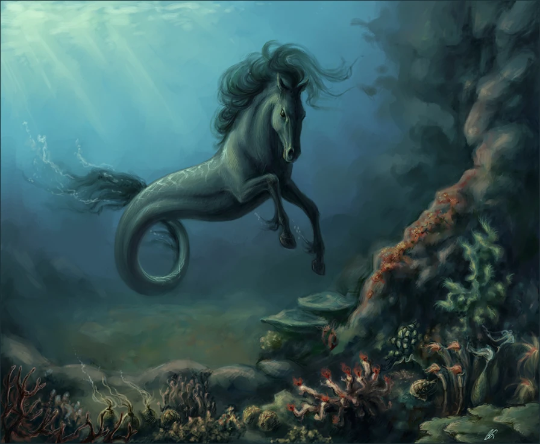

El hipocampo es una criatura de la mitología griega con la parte delantera de un caballo y la parte trasera de un pez o serpiente marina. Su nombre proviene de las palabras griegas “hippos”, que significa caballo, y “kampos”, que significa monstruo marino. Habitaba en las profundidades del océano y era considerado un ser majestuoso y poderoso. En la mitología griega, el hipocampo estaba especialmente vinculado a :contentReference[oaicite:0]{index=0}, dios del mar, de los terremotos y de las tormentas. Muchas representaciones artísticas muestran el carro de Poseidón siendo arrastrado por varios hipocampos a través de las aguas. Esta criatura simboliza la fuerza del océano, el misterio del mar y la unión entre el mundo terrestre y el acuático. Su apariencia híbrida lo convirtió en una figura muy popular en mosaicos, esculturas y arte clásico.